The species card
How to read a card.
Every species in Tawari has its card. This is the monarch butterfly's, from top to bottom, with what each part does.
The photo and the name
Up top, the openly licensed photos: swipe for more. Its common name, the scientific name below it, and its family's drawing in the circle. The IUCN tag gives its conservation status; tap it for what that means.
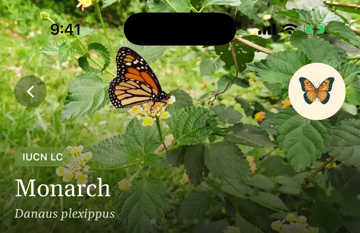
Its other name, and one line to remember it by
Its name in the other language, its family and its order. Then, in italics, the most surprising thing about the species, in one sentence.
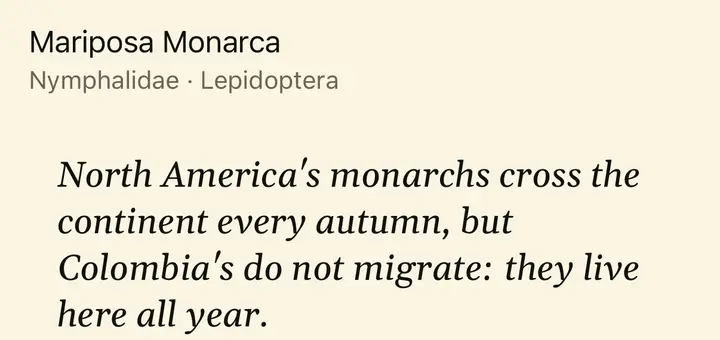
The summary
What it is, what it looks like and where it lives, in a few lines. If a technical word has a dotted underline, tap it and the card tells you what it means.
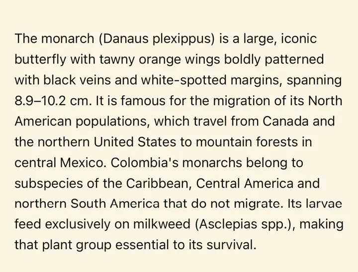
How to recognise it
Field marks first: what to look at to tell it from look-alikes. Then the full description: size, colours, how males and females differ, and its life stages.
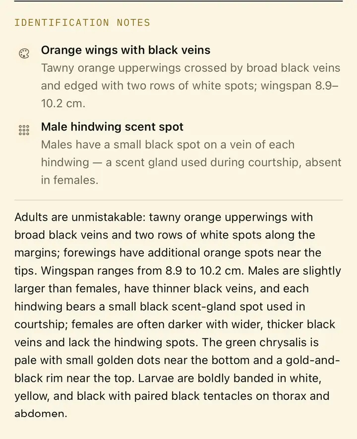
Your sightings
Every time you log it, it shows up here, with the date and the place. Your own history with this species.
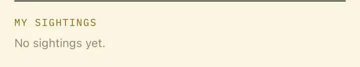
Who it lives with
Who eats whom: what it feeds on, what eats it, and where it lives. Only relationships with a reviewed source appear, and each one says where it comes from.
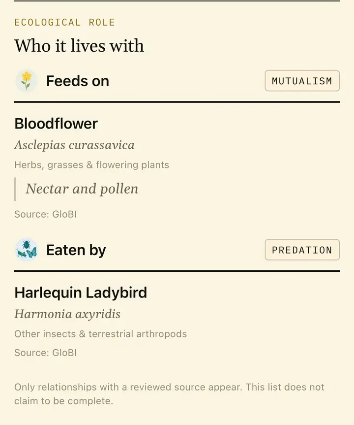
Its role in the ecosystem
Its relationships, its conservation status and what it does where it lives, with the figures of whoever measured them.
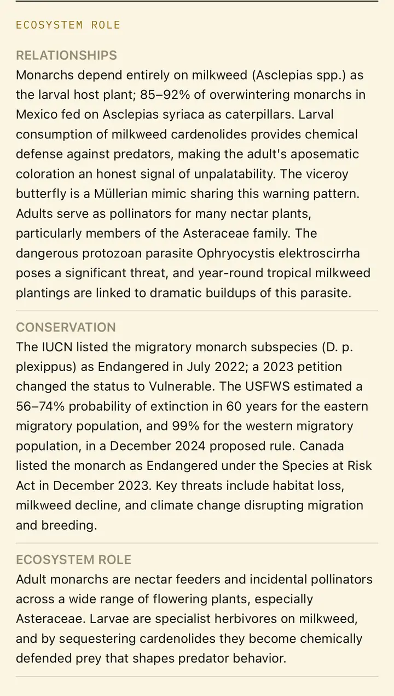
Cultural uses
What the species means to people: traditions, popular names, uses. Always with the people or the place it comes from. Where there are medicinal uses, the card tells them as history, never as advice.
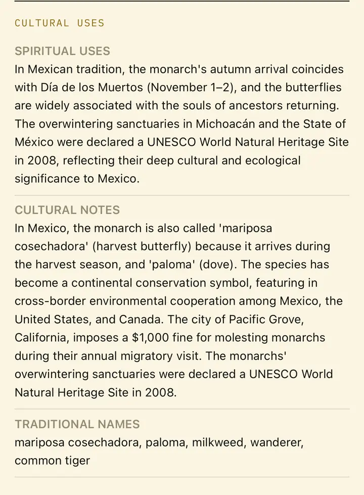
Related reading
Scientific papers that name the species, for anyone who wants to go further. "Free to read" marks the ones you can open at no cost.
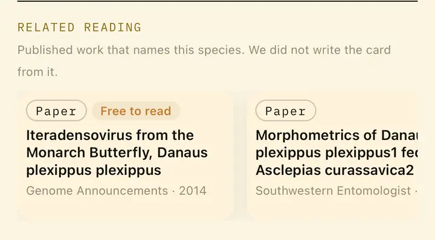
Its group
What it shares with its relatives, with a link to the group's full page in Learn.
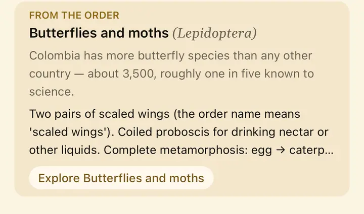
Where it lives
The ecosystems of Colombia where it is found. Each one opens its own page.
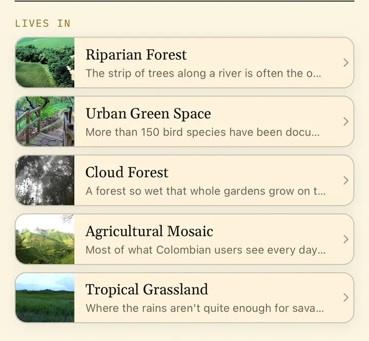
Its place in the tree of life
Kingdom, class, order, family and genus, from the general to the particular.
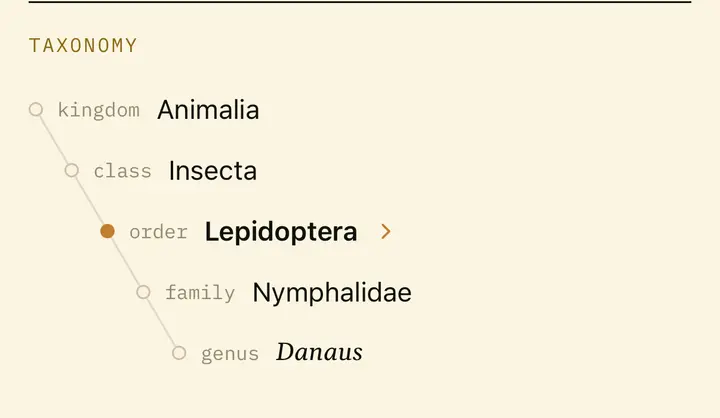
Where to find it
Places in Tawari where it has been recorded. Tap one to see who else lives there.
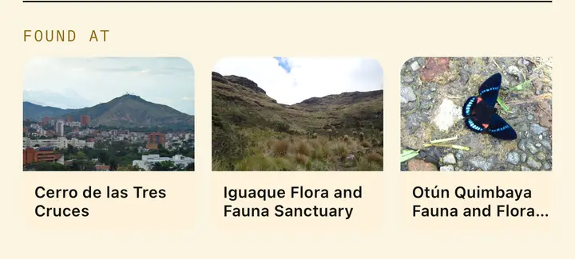
Its distribution
Every record of the species, on GBIF's map.
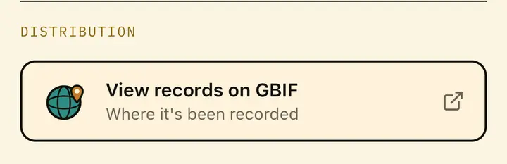
Something not right?
If you spot a mistake, tell us from here. Every report reaches the team.
The sources
Every photo with its author and licence, and every text with its source. On the card, the list runs to the end.
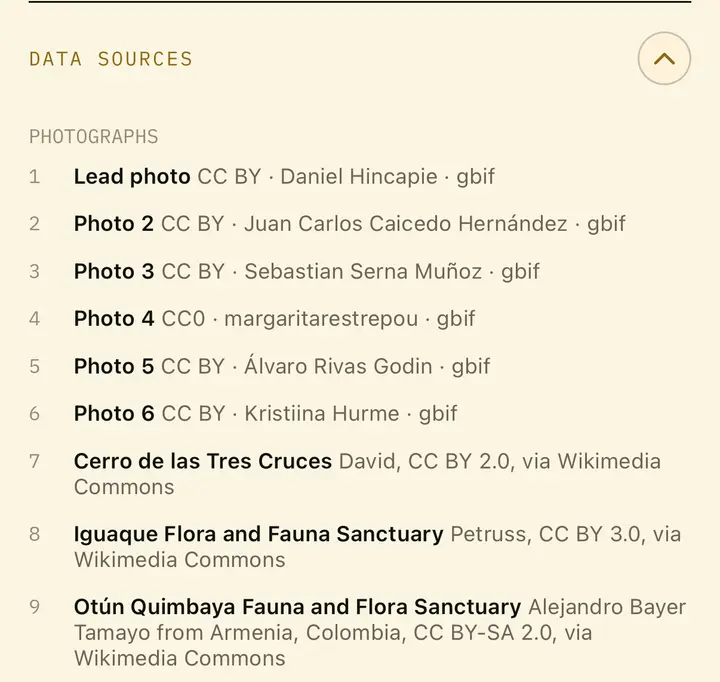
Screens from the app on an iPhone, October 2026. Card photos: Daniel Hincapie and other authors (CC BY and CC0, via GBIF and Wikimedia Commons), credited in the card's sources section.
Some cards also show
- Endemic: a tag on the photo when the species lives only in Colombia.
- Introduced: inside a Field-find, when the species came from elsewhere.
- Caution: a notice when the species is toxic or dangerous.
- Under review: while a person checks the card, a notice asks for caution with the species in the field.
Every Field-find is a list of cards like this one: the species that really live in one place.